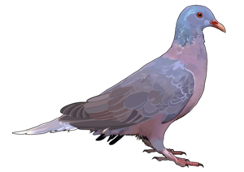
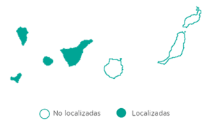
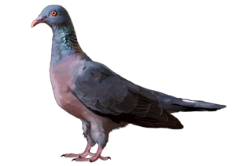
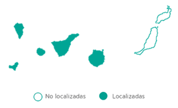

Paloma Rabiche (Columba junoniae)
Es, junto con la turqué (Columba bollii), una de las dos especies endémicas de palomas de Canarias. Robusta y de colores llamativos, esta ave se distribuye por Tenerife, La Palma y La Gomera, en esta última isla, además, está considerada símbolo animal. Actualmente se encuentra en peligro de extinción.

Descripción
Se trata de una paloma de carácter sedentario. Es de gran tamaño (40 cm de largo) y robusta, con cuerpo de color rojizo oscuro y cabeza y cuello gris con reflejos verde-azulados. La cola es gris más clara y el extremo final blanca, razón por la que se le conoce por los siguientes nombres populares: rabichi, rabil, rabiblanca, rovalvo, rabón o palomo. El pico y el borde del ojo es de color naranja, muy llamativo. Cuando son jóvenes los reflejos son más suaves y presentan el pico negro que se torna anaranjado al madurar. El reclamo es una especie de arrullo (“hu-hu-huuu”).
Dieta
Su dieta es principalmente frugívora, es decir, que se alimenta básicamente de frutos, sobre todo de los del tilo y del viñátigo. También aprovecha las semillas y frutos de campos cultivados.
Hábitat
Su hábitat preferido es el bosque de laurisilva principalmente y de monteverde. También se le puede observar, en busca de alimentos, viviendo de manera momentánea en plantaciones. Habita áreas más bajas que la paloma turqué ya que no parece tan supeditado a la laurisilva.
Distribución:

Paloma Turqué (Columba bollii)
Es, junto con la rabiche (Columba junoniae), una de las dos especies endémicas de palomas de Canarias. Se distribuye por Tenerife, La Gomera, El Hierro y La Palma, y seguramente en el pasado viviera también en Gran Canaria. Asociada a los bosques de Monteverde, especialmente al de laurisilva, es más numerosa que su pariente la paloma rabiche.

Descripción
Se trata de una paloma de carácter sedentario. Es de gran tamaño (35-39 cm de largo y 65-68 cm de envergadura) y robusta, con cuerpo de color gris, pecho de color vino con reflejos verdes y rosados. Las cortas alas son más oscuras y la cola tiene una franja oscura al final y una blanca anterior. El pico es rojizo y anaranjado en la punta. Cuando son jóvenes, no presentan los reflejos del cuello y el pico es grisáceo, torna a rojizo al madurar. El reclamo es una especie de arrullo “ruru- rí-ru”, ronco y gutural.
Dieta
Su dieta es principalmente frugívora, sobre todo se alimenta de los frutos de los árboles de la laurisilva, como el viñátigo, la faya o el acebiño. También come algunas hojas y granos.
Hábitat
Su hábitat preferido es el bosque de laurisilva principalmente y de monteverde. También se le puede observar en verano en busca de alimentos, por pinares y zonas de cultivo . Está más supeditado a su hábitat, la laurisilva, que la rabiche.
Distribución:
